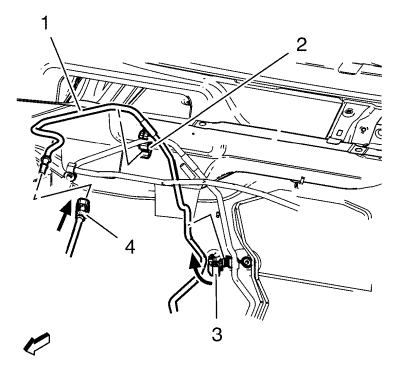
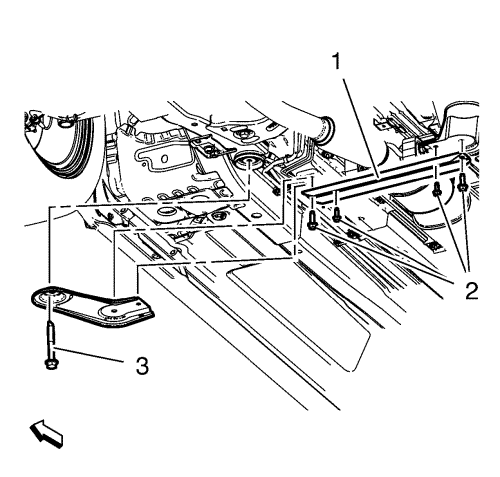
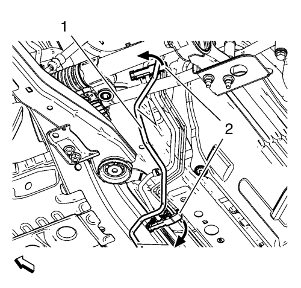

Sustitución de la tubería de alimentación de combustible
Procedimiento de desmontaje
Advertencia: Consulte Advertencia sobre la gasolina y sus vapores en la sección Prólogo.
- Desconecte el cable negativo de la batería. Consultar Desconexión y conexión del cable negativo de la batería .
- Desmonte la cubierta del motor. Consultar Sustitución de la cubierta del motor .

- Desconecte el tubo de alimentación de combustible (1) del conector del tubo de alimentación de combustible (4).
- Desenganche el tubo delantero de alimentación de combustible (1) del clip de soporte (2).
- Abra el clip del soporte (3) y desmonte el tubo de alimentación de combustible.
- Desmonte el aislante del compartimento delantero. Consultar Sustitución del aislamiento del compartimento delantero .

- Desmonte los 4 tornillos del soporte de suspensión delantero del tubo de escape (2).
- Desmonte el tornillo (3) del bastidor de la suspensión delantera y del tren de rodaje.
- Desmonte el bastidor de la suspensión delantera y del tren de rodaje.

- Desenganche el tubo de alimentación de combustible (1) de los 4 clips de soporte (2).

- Desenganche el tubo de alimentación de combustible (3) del clip de soporte trasero (2).
- Desconecte el tubo de alimentación de combustible (3) del conector del tubo de alimentación de combustible (1).
- Retire el tubo de alimentación de combustible (3).
Procedimiento de montaje
- Monte el tubo de alimentación de combustible (3).
- Meta el tubo de alimentación de combustible (3) en el conector del tubo de alimentación de combustible (1).
- Sujete el tubo de alimentación de combustible (3) en el clip del soporte trasero (2).
- Sujete el tubo de alimentación de combustible (1) en los 4 clips de soporte (2).
- Monte el bastidor de la suspensión delantera y del tren de rodaje.
Precaución:Consulte Precaución con las fijaciones en la sección Prólogo.
- Monte el tornillo del tren de rodaje y del bastidor de la suspensión delantera (3) y apriételo a 120 N·m (89 lib. pie) + 130°.
- Monte los 4 tornillos del soporte de suspensión delantero del tubo de escape (2) y apriételos a 20 N·m (15 lib. pie).
- Monte el aislante del compartimento delantero. Consultar Sustitución del aislamiento del compartimento delantero .
- Monte el tubo de alimentación de combustible (1) y compruebe el clip del soporte (3).
- Sujete el tubo de alimentación de combustible delantero (1) en el clip del soporte (2).
- Meta el tubo de alimentación de combustible (1) del conector del tubo de alimentación de combustible (4).
- Monte la cubierta del motor. Consultar Sustitución de la cubierta del motor .
- Conecte el cable negativo de la batería. Consultar Desconexión y conexión del cable negativo de la batería .
| © Copyright Chevrolet. Reservados todos los derechos |